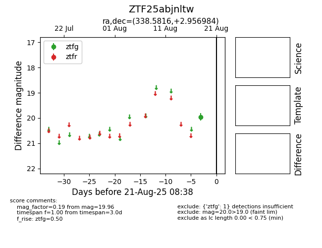

Target ZTF25abjnltw at 2025-08-21 08:38, see:
FINK: fink-portal.org/ZTF25abjnltw
Lasair: lasair-ztf.lsst.ac.uk/objects/ZTF25abjnltw
ALeRCE: alerce.online/object/ZTF25abjnltw
alt names
ZTF25abjnltw (ztf,alerce)
coordinates:
equatorial (ra, dec) = (338.5816,+2.95698)
galactic (l, b) = (69.8248,-45.30894)
photometry
last ztfg=19.96
1 ztfg detections
